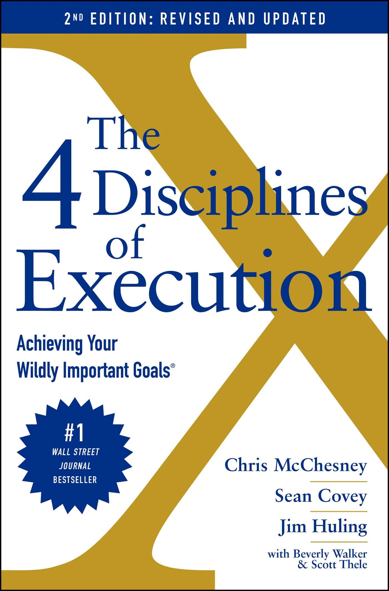

The 4 Disciplines of Execution

By Chris McChesney et All
My thoughts
This is possibly the best framework I've seen for acting on a plan.
Set your focus, measure the lead measures, track lead and lag measures, and have regular check-ins to adjust. It's easy to see how this would produce results. After reading this book, I've noticed all 4 steps in many instances - my workplace, in apps, and in communities.
Although primarily targeted at teams and groups, the book describes these disciplines as universally applicable. I've incorporated them into my own tracking and found it effective.
Notes
Discipline 1: Focus on the Wildly Important
Execution starts with focus. The more you try to do, the less you actually accomplish. Focus your finest efforts on one or two goals that will make all the difference instead of giving mediocre effort to a dozen goals.
Your whirlwind includes all of the urgent activities that are necessary to sustain your business day to day. Focusing on the wildly important means narrowing the number of goals you are attempting to accomplish beyond the day-to-day demands of your whirlwind.
Trying to significantly improve every measure in the whirlwind will consume all of your time and leave you with very little to show for it. Narrow your focus to one or two wildly important goals and consistently invest the team's time and energy into them.
This from X to Y by when format recognizes where you are today, where you want to go, and the deadline for reaching that goal.
"land a man on the moon and return him safely to the earth before this decade is out." NASA had a formidable new challenge, the war it would fight for the next ten years, and it was stated in exactly the way WIGS should be stated: "X" is earthbound, "Y" is to the moon and back, and "when" is by December 31, 1969.
Displine 2: Act on the Lead Measures
The second discipline is applying a disproportionate amount of effort on activities that drive your lead measures.
This provides leverage for achieving the lag measures. While a lag measure tells you if you've achieved the goal, a lead measure tells you if you are likely to achieve the goal. While a lag measure is hard to do anything about, a lead measure is virtually within your control.
A lead measure is predictive, meaning that if the lead measure changes, you can predict that the lag measure also will change. A lead measure is influenceable, it can be directly influenced by the team. Data on lead measures that makes the difference, that enables you to close the gap between what you know your team should do and what they are actually doing.
Without lead measures, you are left to try to manage to the lag measures, an approach that seldom produces significant results. When the lead measures started moving the lag measure, they would be able to see the correlation.
One of the most challenging aspects of their lead measure was simply getting the data. The lag measure data of accidents and injuries came automatically from the company's system each week. The lead measure, compliance to safety standards, had to be physically observed.
When a team defines its lead measures they are making a strategic bet. In a sense, they are saying, "We're betting that by driving these lead measures we are going to achieve our wildly important goal."
Hari's Notes: Time spent on an activity usually a good lead measure for me. It is predictive of something getting done.
Keep a Compelling Scoreboard
The third discipline is to make sure everyone knows the score all times, so that they can tell whether or not they are winning. This is the discipline of engagement.
Visibility also drives accountability.
It should show both the lead and lag measures. The lead measure is what the team can affect. The lag measure is the result they want. The team needs to see both or they will quickly lose interest. When they can see both the lead and lag, they can watch the bet play out.
Can I tell at a glance if I'm winning? It has to tell you immediately if you are winning or losing. Winning or losing requires you to know two things: where you are now and where you should be now.
If your team is operating exclusively in the whirlwind, they're giving everything they have just to sustain their day to day operation and survive. They're not playing to win; they're playing not to lose. And the result is a big difference in performance.
However, we know now, and have witnessed consistently over the years, that results drive engagement. This is particularly true when the team can see the direct impact their actions have on the results. In our experience, nothing affects morale and engagement more powerfully than when a person feels he or she is winning.
Create a Cadence of Accountability
The fourth discipline is to create a cadence of accountability, a frequently recurring cycle of accounting for past performance and planning to move the score forward.
First, the WIG session should be held on the same day and a the same time every week (sometimes even more often-daily for instance-but never less often than weekly). This consistency is critical. Without it, your team will never be able to establish a sustained rhythm of performance. Missing even a single week causes vou to lose valuable momentum, and this loss of momentum impacts vour results. This means that the WIG session is sacred - it takes place every week, even if the leader can't attend and has to delegate the role of leading it.
The whirlwind is never allowed into a WIG session. No matter how urgent an issue may seem, discussion in the WIG session is limited solely to actions and results that move the scoreboard. This high level of focus makes the WIG session not only fast, but extremely effective at producing the results you want.
Steps:
- Account: Report on commitments.
- Review the scoreboard: Learn from success and failure
- Plan: Clear the path and make new commitments.
"What is the most important thing I can do this week?" That question is so broad that it will almost always take them back to something in their whirlwind. Instead, they are asking a more specific question: "What can I do this week to impact the lead measures?"
Each commitment must meet two standards:
First, the commitment must represent a specific deliverable. Must be falsifiable. Second, the commitment must influence the lead measure. If the commitment doesn't directly target the lead measure, it won't advance the team toward achieving the WIG.
Example of Weight Watchers:
Discipline 1: Careful focus on a clear lag measure: losing a certain amount of weight within a certain time frame from X to Y by when.
Discipline 2: Acting on the high-leverage lead measures of calorie intake and output through exercise, measures that the participants can control. These lead measures are expressed in terms of points that are easily tracked.
Discipline 3: Regular scorekeeping and monitoring of the lead measures and the lag measure. A compelling scoreboard engages people and keeps them on track toward the goal.
Discipline 4: The cadence of accountability: the weekly meeting with others who have the same goal. They share stories, check the scoreboard (the scale), celebrate successes, and talk about lapses and what to do about them. Many participants say that the weekly weigh-in is the most motivating thing about the program."
You might also like
- Essentialism: The Disciplined Pursuit of Less
- The Effective Manager